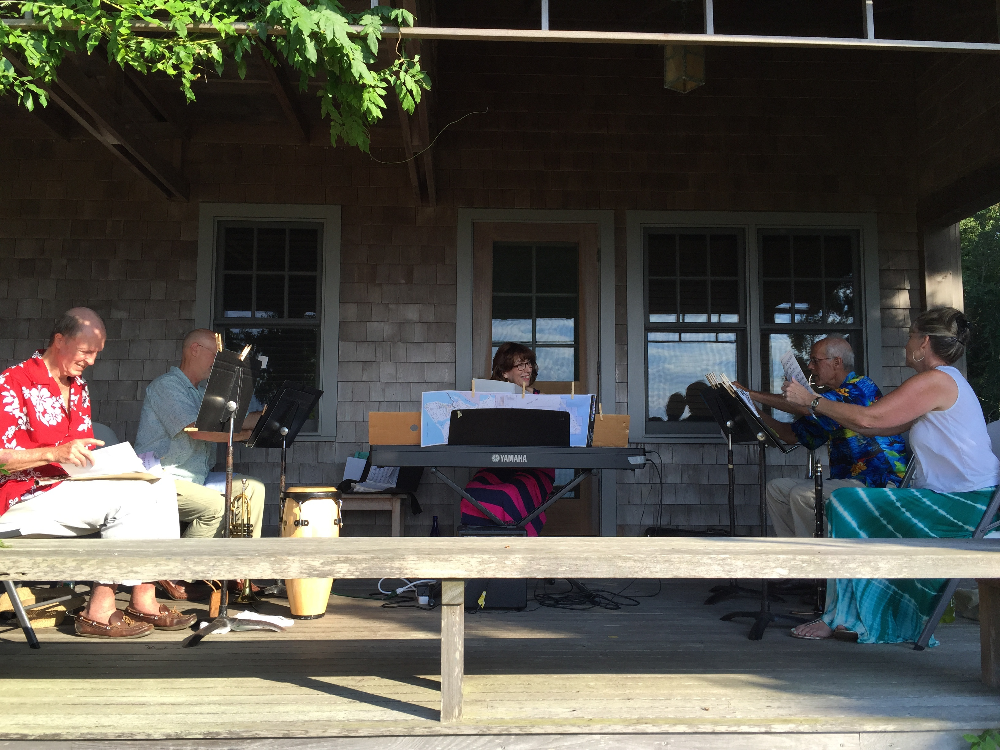

Upcoming Events
August 11, 2018
West Tisbury Sr. Center- Annual Barbecue
11:30am - 1:30pm
October 11, 2018
Edgartown Senior Center - Pizza Party
4:30pm - 6:30pm
December 2018 - April 2019
Winter break